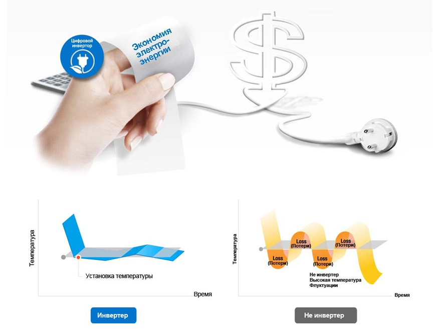
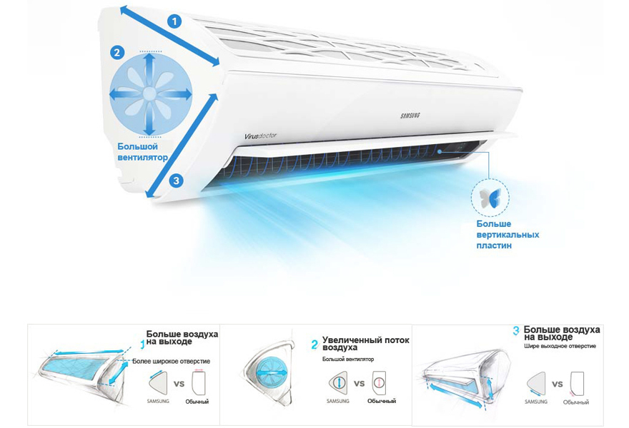
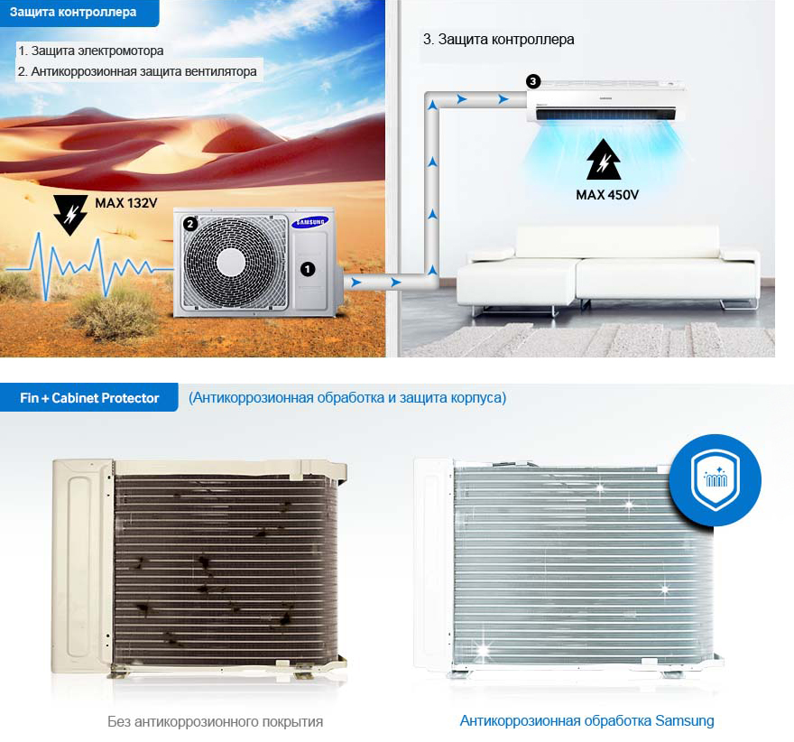
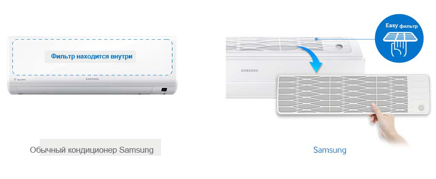

Умный и Экономичный
Кондиционер Samsung оснащен экономичным интеллектуальным инверторным двигателем. Он способен поддерживать заданную температуру без частого включения и отключения. благодаря чему он потребляет на 70% меньше электроэнергии. Цифровой инвертор позволяет поддерживать комфортную температуру в течение длительного времени при минимальном энергопотреблении.

Экономьте электроэнергию, когда вы один в доме
В режиме Single User mode (для одного пользователя) вам не нужно постоянно включать и выключать кондиционер для экономии электроэнергии. В этом режиме компрессор и вентилятор работают достаточно долго для поддержания требуемой температуры и автоматически отключаются при достижении нужных параметров атмосферы в комнате. В результате кондиционер потребляет меньше электроэнергии и уменьшает счета за электроэнергию и обеспечивает прохладную атмосферу в помещении. Данные основаны на учете потребляемой мощности в нормальном режиме по сравнению с режимом, рассчитанным на одного пользователя.
Охлаждает быстрее, дальше и шире
Новый кондиционер Samsung - это совершенно новая разработка для более эффективного охлаждения. Уникальная треугольная конструкция отличается более широким впускным отверстием, благодаря чему в кондиционер всасывается больше воздуха. Кроме того, входное отверстие отличается большей шириной и большими углами, а специальные жалюзи с пластинами extra v-blades и более мощный вентилятор также способствуют более быстрому охлаждению всасываемого воздуха. В результате свежий воздух достигает каждого уголка вашей комнаты.

Стабильность рабочих характеристик
Кондиционер Samsung способен работать в самых тяжелых атмосферных условиях. Тройная технология защиты (Triple Protector Plus) защищает компрессор и контроллер от сбоев в электросети без использования стабилизатора напряжения. Детали кондиционера имеют антикоррозионное покрытие, благодаря чему корпус и конденсор защищены от ржавления. Большой конденсор и оптимизированная система циркуляции воздуха в системе обеспечивает его бесперебойную работу при температурах до 58ºC.

Простая система диагностики неисправностей
Кондиционер Samsung оснащен функцией Smart Check, представляющей собой автоматическую систему диагностики неисправностей. Эта система позволяет диагностировать неисправности на ранней стадии и быстро принимать решения для их устранения с помощью приложения, установленного на смартфоне*. В результате вы экономите время и избавляетесь от необходимости поиска неисправности вручную или вызова специалистов сервисной службы, что позволяет экономит время и стоимость ремонта. Совместимо с iPhones и Android устройствами. Эта функция, тем не менее, не заменяет необходимости периодического сервисного обслуживания.

Более быстрое и комфортное охлаждение воздуха
Кондиционер Samsung в режиме ускоренного охлаждения (режим Fast Cool) очень быстро охлаждает воздух в комнате. После этого он переключается в режим комфортного охлаждения (Comfort Cool) для поддержания установленной температуры. В результате вам не нужно вручную переключать режим работы кондиционера или включать и выключать его.

Удаляет вирусы
Virus Doctor и фильтр "Easy Filter" удаляет пыль, опасные загрязнения и аллергены, взвешенные в воздухе, а также бактерии и вирусы, включая вирусы Influenza A и Corona* – сначала с помощью фильтра, а затем с помощью Virus Doctor. В результате ваш воздух всегда будет чистым и здоровым, * Испытано в испытательном центре Kitasato Environmental Science Center (Japan) & Yonsei Univ.(Korea) / тестовой лаборатории в Корее (FITI / KEMTI) и Японской тестовой лаборатории (ITEA). Эффективно удаляет 4 типа вирусов, включая Subtype H1N1, а также некоторые виды бактерий. Данные получены при специальных условиях и могут отличаться в зависимости от факторов окружающей среды.

Легкость в обслуживании
В отличие от обычных кондиционеров с неудобным доступом к фильтрующим элементам, новый кондиционер Samsung оснащен фильтром, находящимся на верхней панели. Его можно легко вынуть и установить обратно - для этого не нужно открывать крышку или с трудом вытаскивать. Антибактериальное покрытие фильтрующего элемента удаляет из воздуха опасные загрязнения и аллергены.
